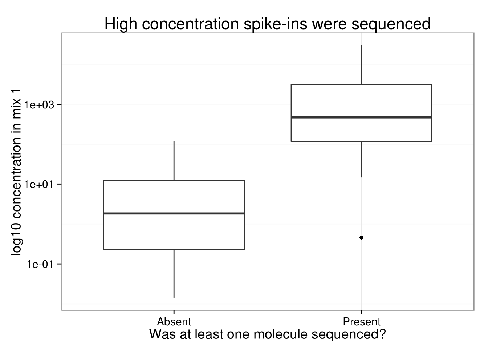
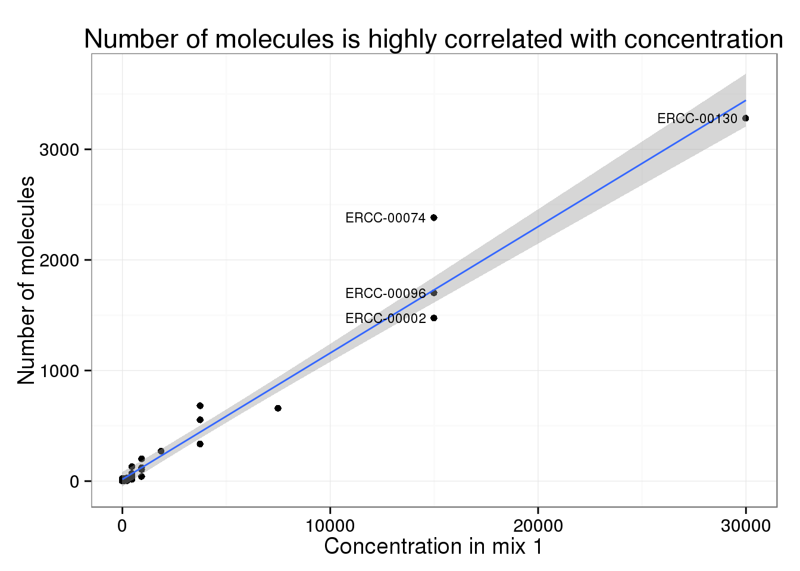
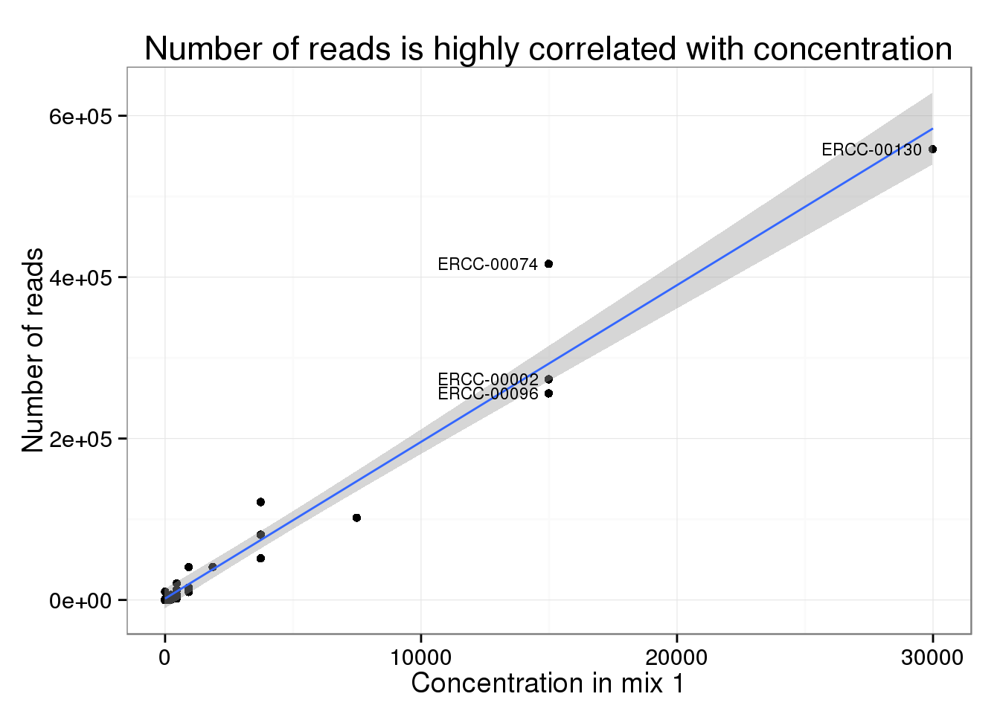
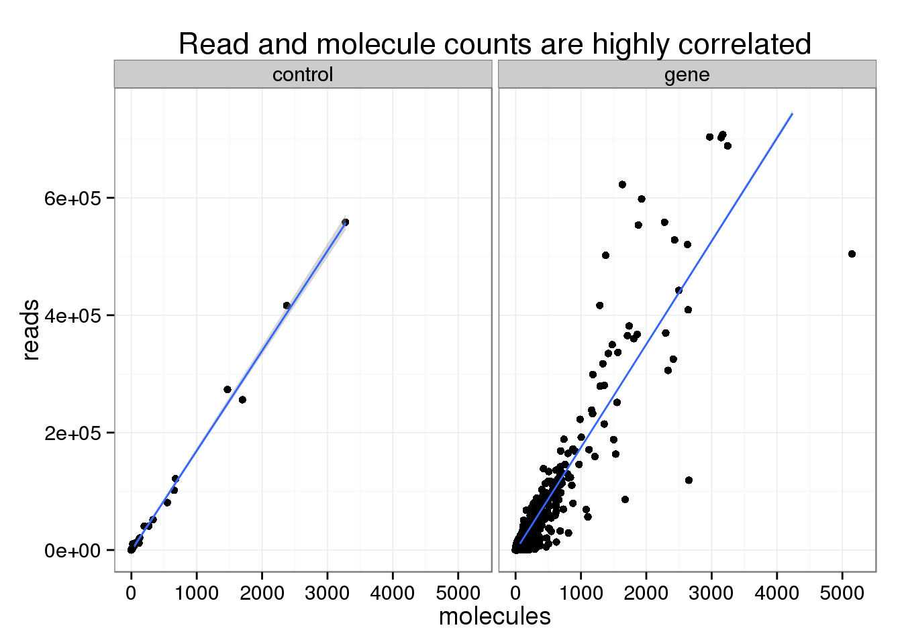
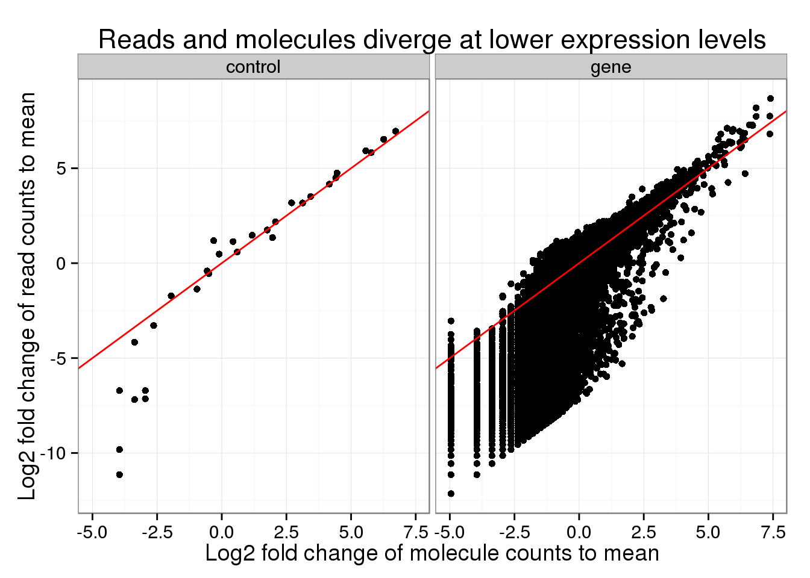
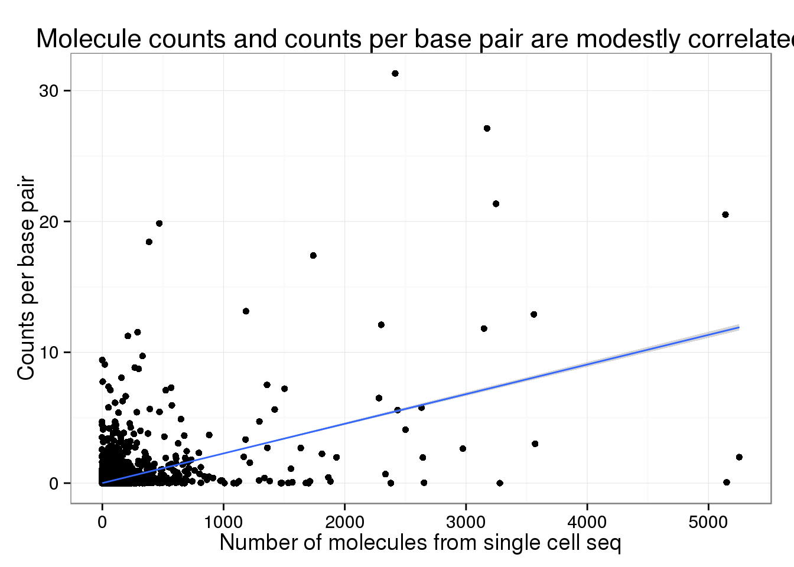
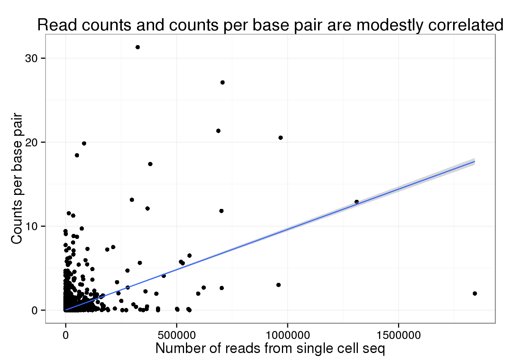

Assessment of single cell sequencing rapid run
John Blischak
Last updated: 2015-06-16
Code version: a43ca3288509e4f90d216b0d2d36ed1db5770a6e
Data processing
Po-Yuan sequenced two single cells on a rapid run flow cell. In addition to the cellular RNA, she added the ERCC RNA spike-in mix separately to each cell to assess the efficiency of the single cell sequencing. She also added in PhiX sample in order to boost the concentration. The samples were multiplexed and the mix was sequenced on both lanes. However, the sample barcode was not read so the data has to be analyzed jointly.
I processed the sequencing data using a pipeline which utilized Snakemake, R, umitools, Subread, and samtools. The genome used for mapping was a combination of human genome hg19, the ERCC RNA spike-in sequences, and the PhiX genome. The genomic features for counting were Ensembl exons from both coding and non-coding genes as well as the ERCC sequences.
For comparison, I also processed traditional RNA-sequencing on a population of cells for individual NA19239 from Pickrell et al. 2010 (Yale data only because it was available in fastq format. The Argonne data is in map format).
Here is the rough break down of the number of sequences obtained:
- ~250 million raw reads
- ~150 million reads with unique molecular identifier
- ~114 million reads mapped to genome or controls
- ~85 million reads mapped to human exons or control sequences
- 581995 unique molecules, which corresponds to 18870 genes
According to Yoav, the common wisdom is that each cell contains about 500,000 molecules. Thus, with 581995 unique molecules (only 12207 of which map to the ERCC controls) for low-coverage sequencing of two single cells, we are in the right approximate range.
ERCC spike-in mix
Po-Yuan added ERCC RNA spike-in mix 1 to the RNA from each single cell before tagging with unique molecular identifiers. I downloaded the concentration information from Life Technologies website and combined it with the sequencing data.
Of the 92 ERCC spike-ins, only 30 had at least one molecule sequenced. As expected, the ones we sequenced were at a much higher concentration (attomoles/μL) in the spike-in mix compared to those that we missed.

Of the 30 spike-ins with at least one molecule sequenced, the concentration level was highly correlated with both the molecule (0.9840332) and read (0.9807536) counts.

Comparing reads and molecules
For the analyses below, I use only the 18870 genes and 30 controls with at least one molecule identified in this experiment.
The read and molecule counts are highly correlated for both the ERCC control spike-ins (0.9978104) and genes (0.9189714).

Note that this plot has been truncated on the y-axis to exclude a few highly expressed genes. Also note that the number of molecules is greater than 1024, which is the number of possible unique molecular identifiers. This is likely due to genes that are highly expressed and have multiple transcription start sites, which would make it possible to tag more than 1024 molecules. Overall, this occured only for a small fraction of the features (45 genes and 4 controls).
In order to find where the measurements differed, I created a plot similar to Figure S1 of Islam et al., 2014. In it, they calculate the log fold change of each count to the mean count, e.g. the log fold change of the number of molecules for a particular gene compared to the mean number of molecules across all genes.

Similar to their result, the read and molecule counts disagree for lower expressed genes. Normal sequencing underestimates the expression compared to the true number of molecules.
I also performed a similar analysis, but this time comparing to the median counts. Overall the trend looks similar.

The main difference is that the points fall above the diagonal because the median of the reads is so much lower than the mean.
- mean read count: 4516.6
- median read count: 32
- mean molecule count: 30.79
- median molecule count: 7
The fact that the higher expressed genes are above the red line indicates that normal sequencing oversamples these transcripts.
Comparing single cell versus traditional sequencing
For this analysis, I used only the 26787 genes with at least one molecule sequenced in this experiment or at least one read sequenced in Pickrell et al. 2010. The single cell-sequencing does not need to be scaled by gene length because only the 5’ end of each RNA molecule is sequenced. However, the Pickrell data needs to standardized by gene length since longer genes have more RNA that can be fragmented and sequenced. Thus below the traditional data is counts per base pair of exonic sequence.
Both the number of molecules (0.5021497) and reads (0.4617872) from the single cell sequencing are modestly correlated with the counts per base pair from the traditional sequencing.


Rarefaction curve
We sequenced these two single cells on both lanes of a rapid run, which resulted in ~250 million raw reads and 581995 unique molecules mapped to coding and non-coding genes as well as the ERCC controls.
Based on a rarefaction curve, implemented using the R package vegan, it appears we are close to saturation.
The above plot requires a minumum of only one unique molecule for a gene to be considered present. Also, it includes non-coding genes and the ERRC controls.
However, the result is similar when using only protein-coding genes.
## R version 3.2.0 (2015-04-16)
## Platform: x86_64-unknown-linux-gnu (64-bit)
##
## locale:
## [1] LC_CTYPE=en_US.UTF-8 LC_NUMERIC=C
## [3] LC_TIME=en_US.UTF-8 LC_COLLATE=en_US.UTF-8
## [5] LC_MONETARY=en_US.UTF-8 LC_MESSAGES=en_US.UTF-8
## [7] LC_PAPER=en_US.UTF-8 LC_NAME=C
## [9] LC_ADDRESS=C LC_TELEPHONE=C
## [11] LC_MEASUREMENT=en_US.UTF-8 LC_IDENTIFICATION=C
##
## attached base packages:
## [1] stats graphics grDevices utils datasets methods base
##
## other attached packages:
## [1] biomaRt_2.24.0 vegan_2.3-0 lattice_0.20-31 permute_0.8-4
## [5] ggplot2_1.0.1 knitr_1.10.5
##
## loaded via a namespace (and not attached):
## [1] Rcpp_0.11.6 GenomeInfoDb_1.4.0 formatR_1.2
## [4] plyr_1.8.2 bitops_1.0-6 tools_3.2.0
## [7] digest_0.6.8 evaluate_0.7 RSQLite_1.0.0
## [10] gtable_0.1.2 nlme_3.1-120 mgcv_1.8-6
## [13] Matrix_1.2-1 DBI_0.3.1 yaml_2.1.13
## [16] parallel_3.2.0 proto_0.3-10 stringr_1.0.0
## [19] cluster_2.0.1 IRanges_2.2.4 S4Vectors_0.6.0
## [22] stats4_3.2.0 grid_3.2.0 Biobase_2.28.0
## [25] AnnotationDbi_1.30.1 XML_3.98-1.2 rmarkdown_0.6.1
## [28] reshape2_1.4.1 magrittr_1.5 scales_0.2.4
## [31] htmltools_0.2.6 MASS_7.3-40 BiocGenerics_0.14.0
## [34] colorspace_1.2-6 labeling_0.3 stringi_0.4-1
## [37] RCurl_1.95-4.6 munsell_0.4.2